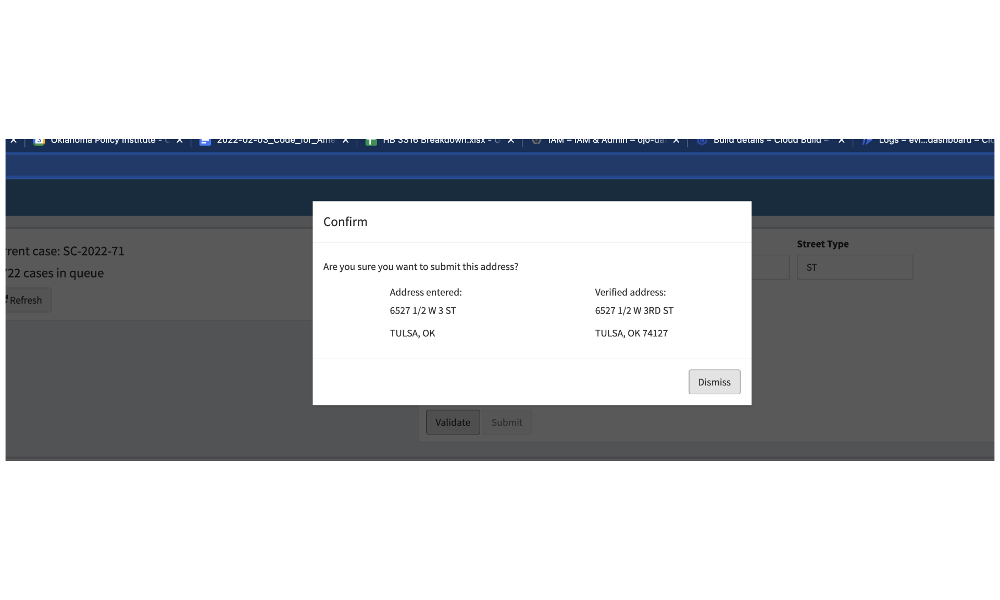
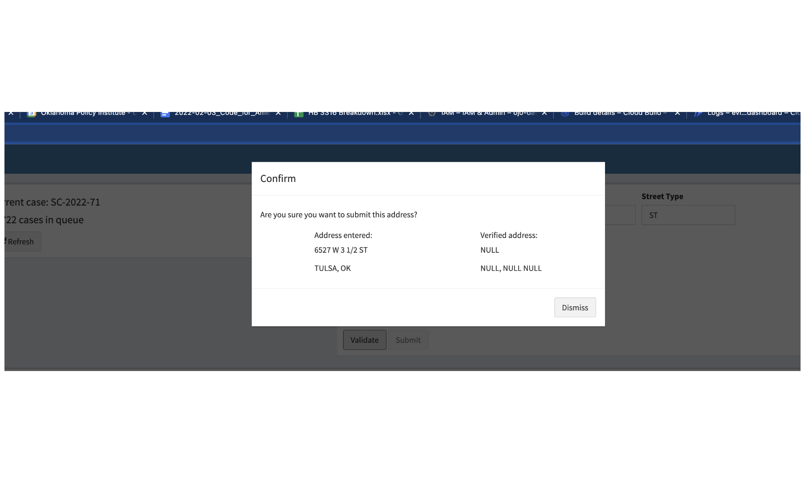

Eviction Address Entry Guide
Brancen Gregory
1/12/2022
entry-guide.RmdOverview
The goal of this project is to accurately transcribe addresses from court documents so community partners can use this information to quickly respond to situations of need. This document should help explain the process and make it easy to get started.
Address Entry Interface
There is currently a bug where after successfully submitting a verified address the dialog box goes away but the case does not refresh. Simply press “New Case” and you should see a new case number along with a decrease in the number of cases remaining to be transcribed.
Court Documents
Court records are stored on OSCN. Usually people type in whatever information they have about a case, whether the case number itself, or simply the name of a party involved in the case. This would bring up case information and a list of any documents associated with the case.
For our purposes, we are interested in the document with the code FEDS. This stands for Forcible Entry Detainer Served, and is where the address of interest is located.
Entry
Some addresses in Tulsa County are… weird.
There can be ‘half’ street numbers. Often times people mis attribute the 1/2 to the street name rather than number. See the screen shots below. Including the 1/2 in the street number correctly validates, while including it in the street name fails.
